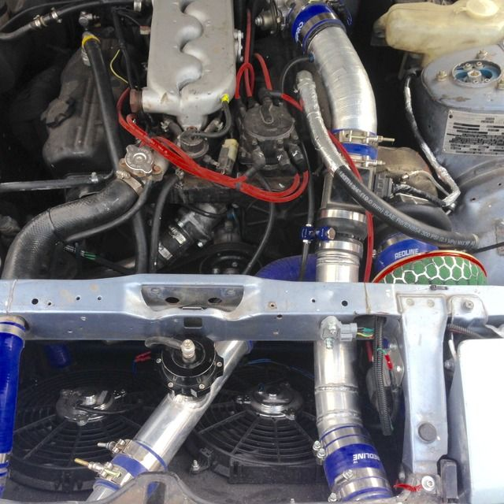

-
So I'm finishing up the last of my turbo kit/intercooler piping re-work. Have a few questions....background info: Blow thru maf configuration. Have a 7" long pipe 3" pipe where the MAF sits about 4.5-5" in the pipe. 2.5" piping inlet/outlet for intercooler.
MAF location:
How far away from the TB should the MAF sit? Does it matter?
How much straight pipe do I need before and after the MAF?
Will reducing the 3" pipe into a straight 2.5" pipe be the same as putting the air into a bend after the MAF?
Is 3" pipe overkill for a set-up from MAF to throttle body? Will it even see any gains with 2.5" pipe from turbo to intercooler then 2.5 outlet from intercooler to MAF then 3" from there? I'm just wondering if streamlining the air from the MAF the whole way makes sense or not. Keep in mind this will be a > 600rwhp set-up.Usual Z31 suspect: Garage Queen (aka broken)

-
You want the MAF at least 6" away from the throttle body. Ideally you want at least 6" straight before the MAF as well. Honestly with the IC being 2.5" I would make all of it the same.
This was my MAF placement when I had one. Was making 400whp on a crappy JWT 3BAR ECU
-
about here

My setup runs perfectly stable My plan was rather than having a straight section and a bend with a shap intersection was to just make the entire length bend very very gently. IC cold side is 2.75 so the step up to 3" is very minimal.
My BOV is also on the hot side, it dumps hot air and i don't get compressor surge so meh.85 Turbo Slick Top
__________________________________________________ _____ -
Stupid question here, guys. James, you look like you have a stock MAF there. Can the stock MAF be used in blow-through? I thought the pressure would be too high. -
I was running a stock maf as blow thru. Blew the plastic top off it. After a bunch of glue and zip ties I got it to stick.Usual Z31 suspect: Garage Queen (aka broken)
-
I'm running a stock MAF and a stock T3 as a blow thru setup on a daily driver.
I"ve more or less kept most of the emmissions and the AC.
I'm running an old 3" procharger FMIC with 2.25" tubing that sneaks over the top of the radiator while staying underneath the bumper cover.
In the middle of this I managed to leave the MAF sensor attached to the stock body mounts with a silicone reducer attached to each end of it.
And apparently I am not a google drive expert so the pics have ot wait.Life's short
Go fast
Have a blast
Leave a good looking corpse -
Would really like to see the pics of the IC piping if you can make it work - I think a couple guys have done the over-the-rad thing but I want to see where you go around/thru the bumper.
So after reading a little more I guess the main concern with using a stock maf in blow-through is that you're not spewing oil at it? -
Here's a couple links to my rats nest.
https://drive.google.com/file/d/0BwD…FVakx2VUk/view
https://drive.google.com/file/d/0BwD…I0bXdGdGs/view
2.25" is about the biggest pipe you can run through the hole above the radiator when using an upgraded 3-4 core (whatever asco sells) radiator
The procharger IC is a same side inlet outlet IC that basically covers the whole radiator.
Eventually I'l get some pics of it in the daylight.Life's short
Go fast
Have a blast
Leave a good looking corpse -
Sorry I didn't say thanks for the pics sooner, I appreciate it. You running without a bumper under the cover I assume? -
There's a bumper there. Its what the top of the intercooler bracket bolts to. The bottom bracket bolts to the body. I think I got the idea from a the spearco intercooler kit instructionI had to relocate the outside air temp sender for the gll dash to the other side of the bumper to make it all fit. Was just a matter of extending the wires. The hole was already there, thinking it was there to use the same bumper on right hand drive models.Life's short
Go fast
Have a blast
Leave a good looking corpse -
Here's a couple more links.
https://drive.google.com/file/d/0BwD…ew?usp=sharing
https://drive.google.com/file/d/0BwD…ew?usp=sharing
https://drive.google.com/file/d/0BwD…ew?usp=sharing
https://drive.google.com/file/d/0BwD…ew?usp=sharing
https://drive.google.com/file/d/0BwD…ew?usp=sharing
Its ugly, but it works on a shoe string budget.Life's short
Go fast
Have a blast
Leave a good looking corpse -
i think i like it and how u used the stock maf location. as long as it hold pressure right? did you have to glue or zip tie as well or ? am i missing something.? -
No glue or zip ties yet.
Being a daily driver that's making a 90+ mile round trip to work I'm intentionally keeping it close to stock for fuel economy.
I've got an EBC set to 7psi, just far enough over stock to make it work while keeping reliability.Life's short
Go fast
Have a blast
Leave a good looking corpse

Copyright © 2006–. All rights reserved. Privacy Policy